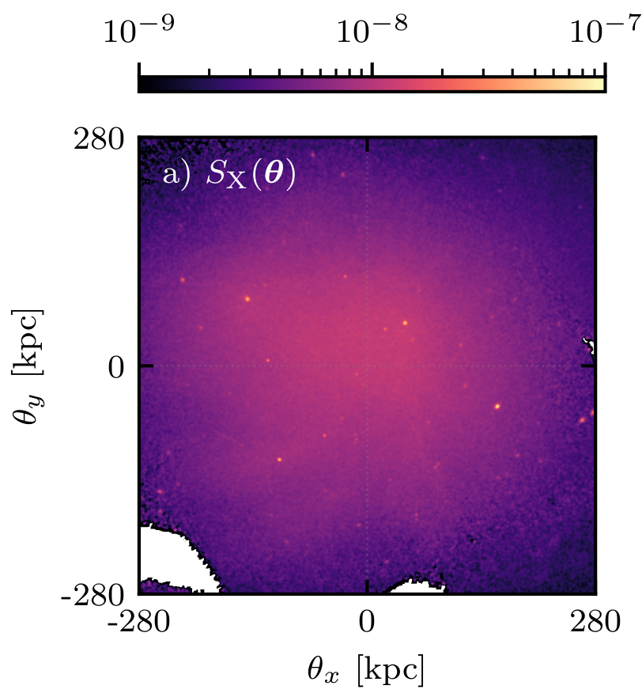

Turbulence in the Intracluster Medium
Galaxy cluster mass estimates underpin precision cosmology, but they depend on non-thermal pressure from gas motions driven by mergers, feedback and galaxy motions, usually modelled as turbulence.
I measure turbulent cascade rates, energies and characteristic scales from surface brightness fluctuations, and quantify how observational effects bias those measurements.